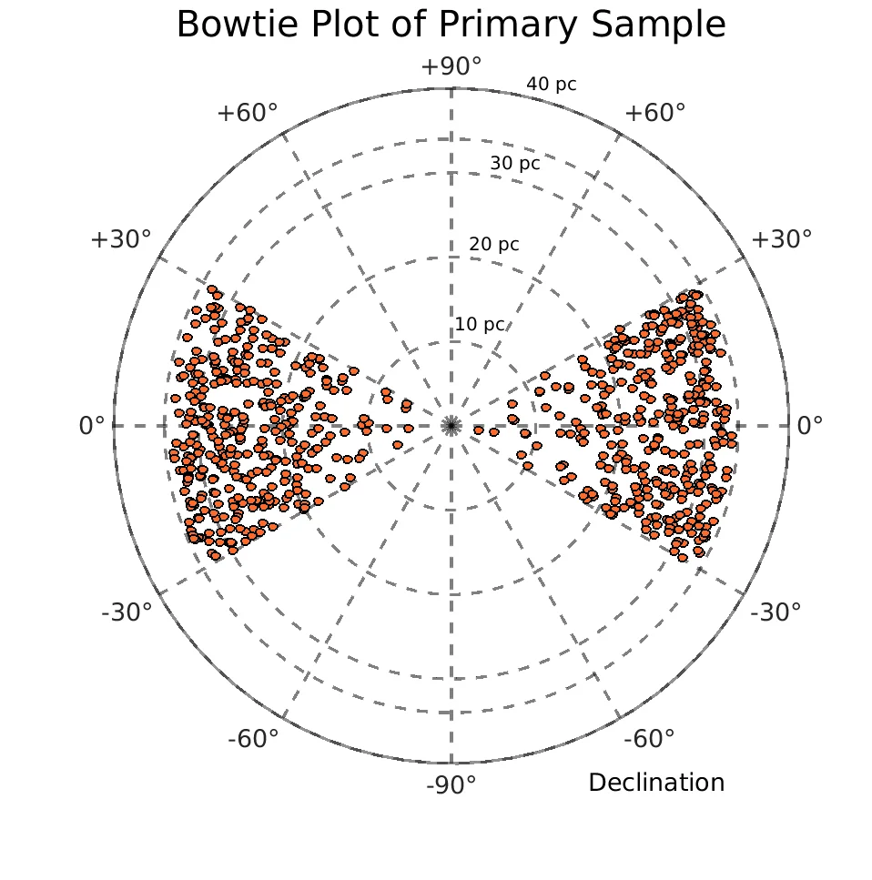
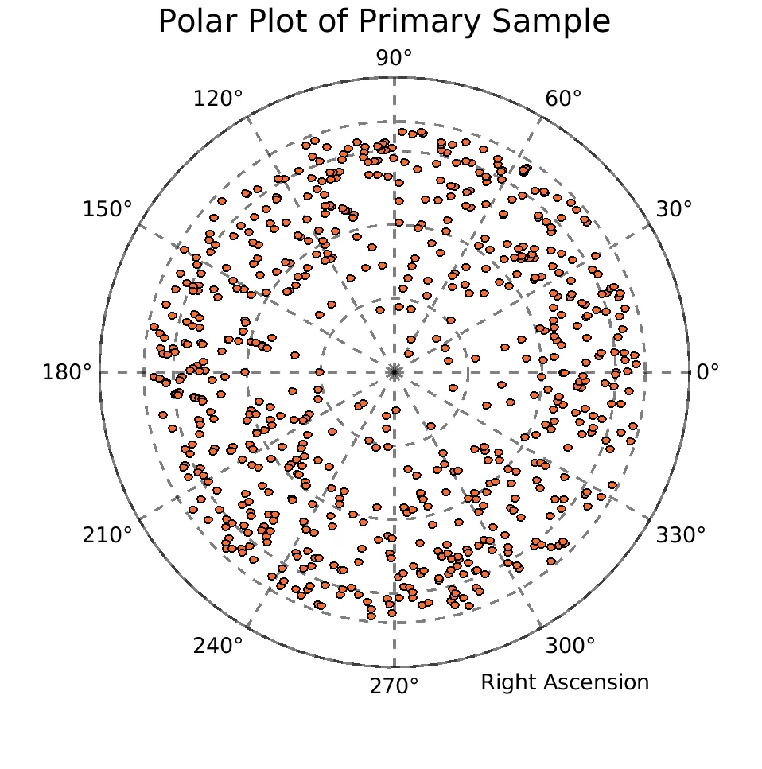
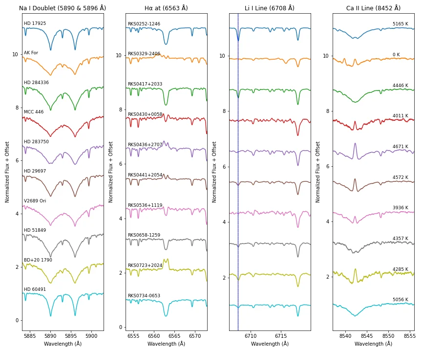
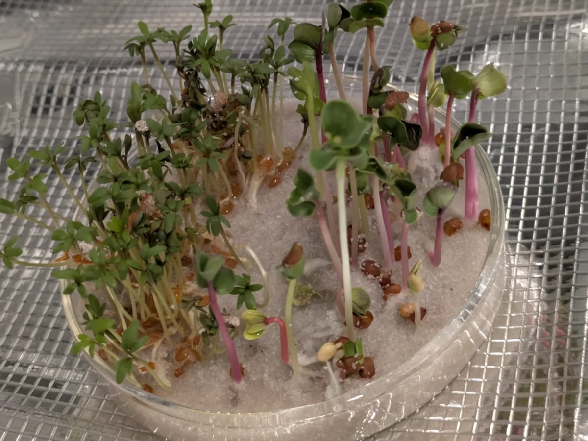
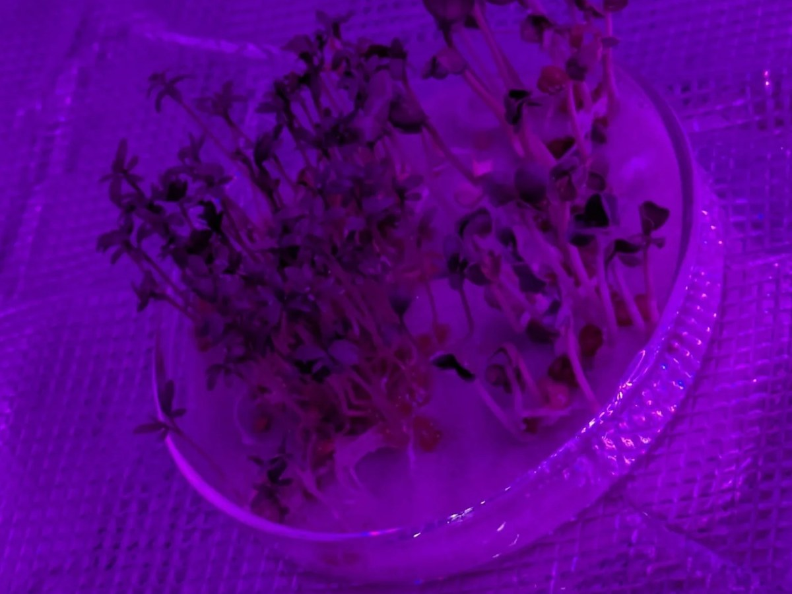
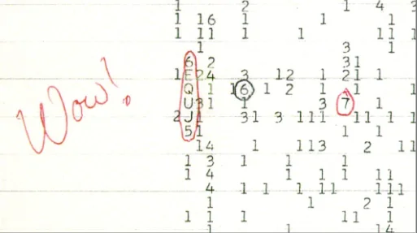
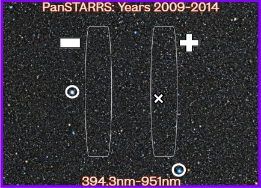

Interdisciplinary Integration
ISLANDS Lab uniquely combines stellar astrophysics, experimental astrobiology, and technosignature analysis to address fundamental questions about where life can exist and thrive around different star types. This integrated approach allows us to evaluate habitability from multiple perspectives that cannot be answered by any single field alone.
Stellar Spectroscopy
ISLANDS Lab characterizes stellar properties and magnetic activity evolution for K dwarf stars in the solar neighborhood. We analyze archival space telescope observations and optical spectroscopy to identify stellar hosts that provide stable, long-term habitable environments.
We observed 615 K dwarfs and analyzed 580 of them, all within 33 parsecs, using the CHIRON echelle spectrograph (R=80,000) on the CTIO 1.5m telescope in Chile. Three diagnostic regions separate young and active stars from mature and quiet ones: Hα shifts from emission to absorption, lithium depletes with age, and Ca II core emission fades. 7.4% of the sample (43 stars) shows youth or chromospheric activity, with 19 showing lithium absorption that indicates ages under 1 Gyr and 36 showing Hα emission. Including kinematic members of the AB Doradus and Hyades moving groups raises that figure to 8.8% (51 stars). The remaining 529 mature K dwarfs are the better targets for terrestrial planet searches. Published as Hubbard-James et al. 2026, The Astronomical Journal, 171, 175.

Bowtie plot showing declination and distance distribution for our 580 K dwarf sample.

Polar plot showing right ascension and distance distribution for the complete equatorial census.
Spectral Diagnostics for Age Determination

Spectral diagnostics showing how lithium abundance and Hα emission distinguish young, active K dwarfs from older, calmer systems.
Astrobiology: Life Under Different Starlight
ISLANDS Lab conducts laboratory experiments to understand how photosynthetic organisms respond to stellar illumination environments different from our Sun, connecting stellar properties to biological constraints and opportunities.
Garden cress (Lepidium sativum) and radish (Raphanus sativus) grow under four illumination conditions: a solar control, a quiet K5V dwarf, an active K5V dwarf, and an active K2V dwarf. K dwarf spectra peak in the infrared rather than the visible, and we reproduce them with LED grow chambers and optical filters. Both lit conditions reached 90 to 100% germination by day six, while dark controls came up pale and etiolated. We measure germination rate, daily height, and fresh and dry mass. Kayla Gossett Roper, Makaila Jennings, and Lia Faulks run these experiments. No previous experiment has built realistic stellar activity into K dwarf habitability testing, which is what the active conditions are for. A tunable LED system replacing the acrylic filters is the next step.

Photosynthetic organisms under standard illumination in ISLANDS Lab growth chambers.

Same organisms under simulated K dwarf stellar spectra using optical filters and LED arrays.
Technosignatures
In collaboration with Prof. Abel Méndez (Planetary Habitability Laboratory, University of Puerto Rico at Arecibo), ISLANDS Lab investigates the famous Wow! Signal and other unexplained astronomical phenomena to refine future technosignature search strategies.

The famous Wow! Signal detection from August 15, 1977, showing the "6EQUJ5" sequence that was 30.5 times stronger than background noise.

PanSTARRS archival imaging (2009-2014) of the Wow! Signal field, showing the dual-horn beam positions for optical follow-up.